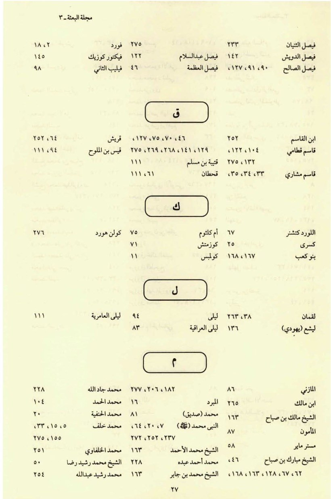
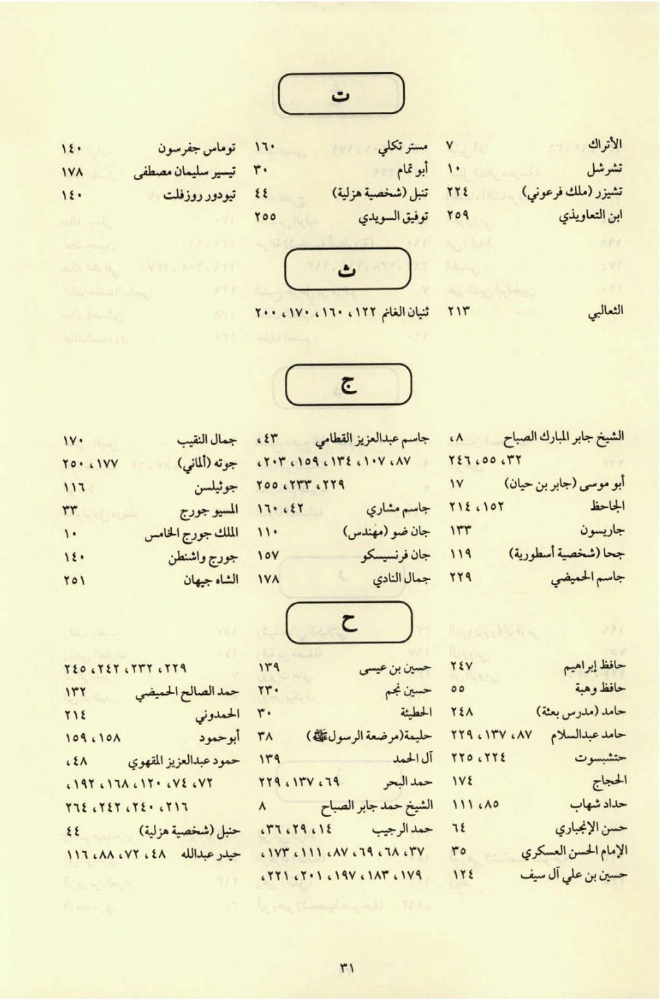
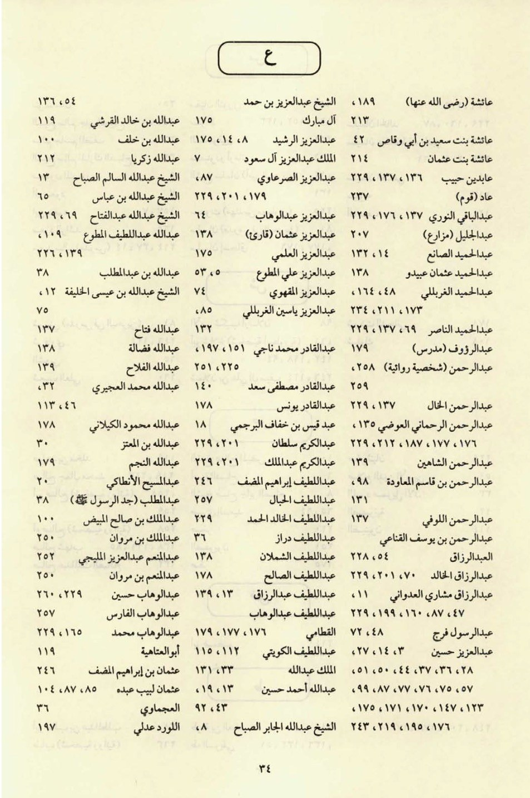
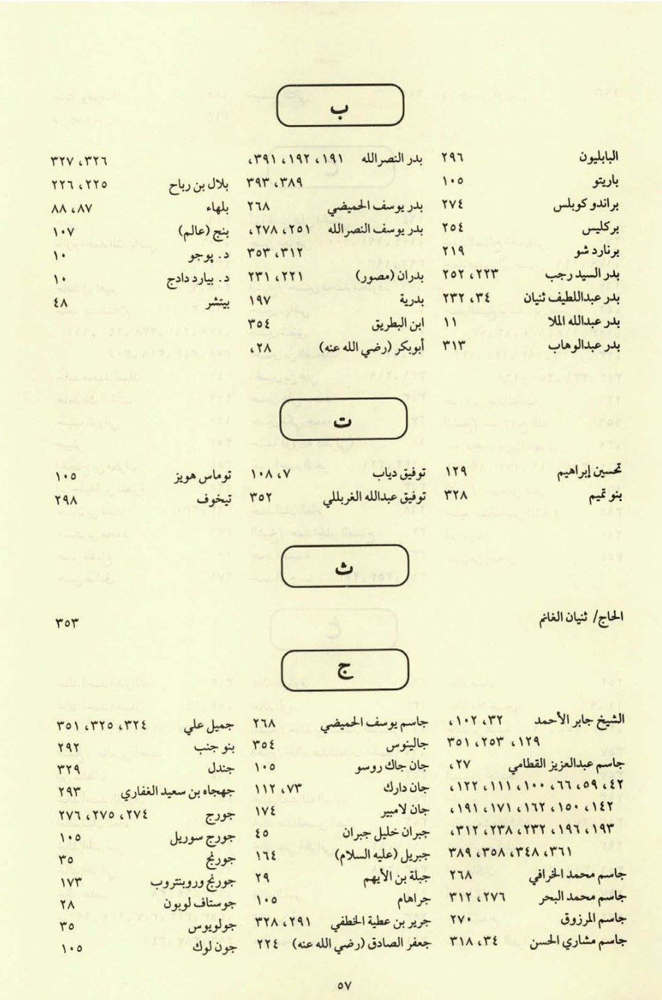
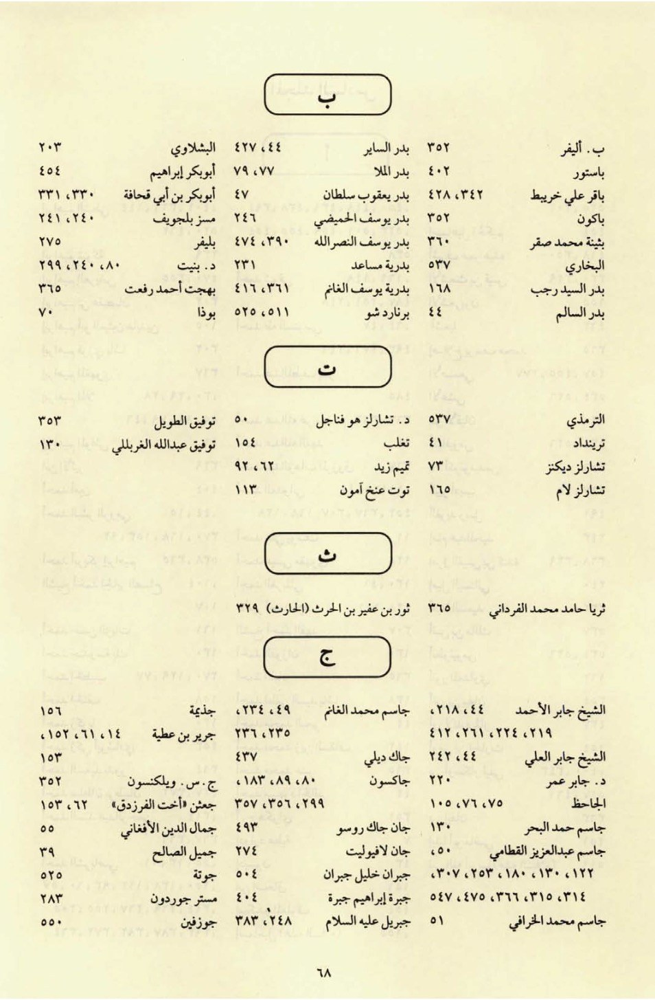
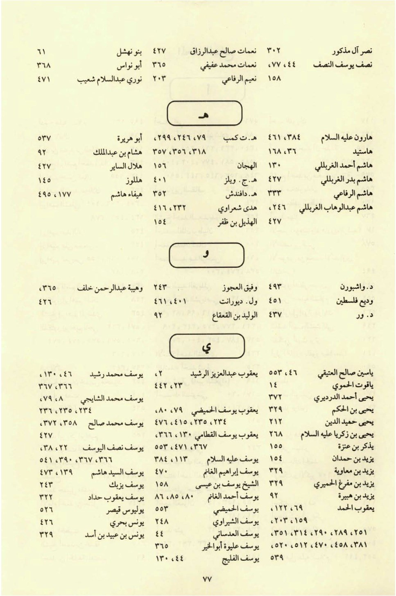
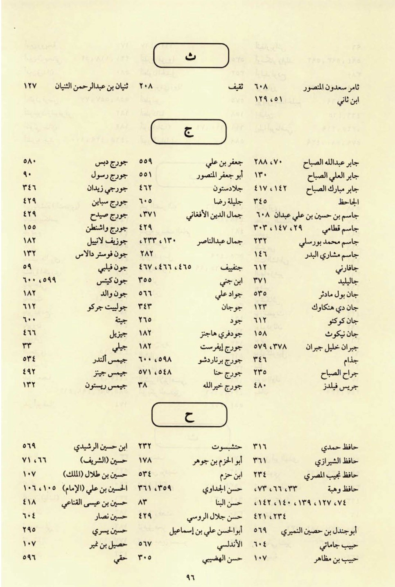
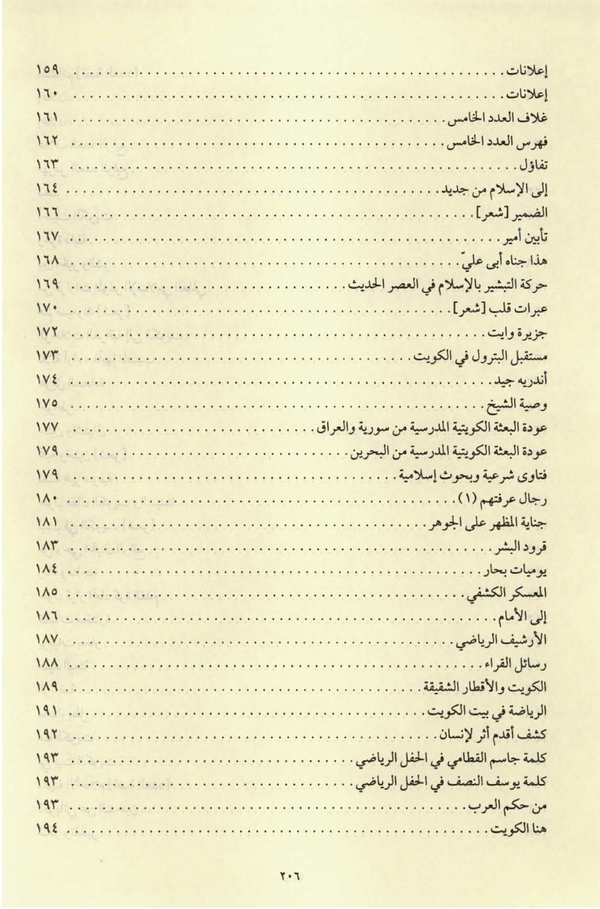

Reprinted 1997 · Index volume (Al-Muqaddima wal-Faharis) of Al-Ba’tha, the monthly magazine of Kuwait House in Cairo, collected and reprinted by the Center for Research and Kuwaiti Studies, Kuwait, 1997
Al-Ba’tha, the collected reprint: every Al-Qatami in the name index
The name index of the reprinted Al-Ba’tha lists the pages where each Al-Qatami appears: Jassim Abdulaziz Al-Qatami in every volume, Eissa Al-Qatami, Abdulwahab bin Eissa Al-Qatami, Abdullatif Abdulwahab Al-Qatami, Yacoub Yousef Al-Qatami, Ahmed, Abdullah and Yousef Al-Qatami, and Fidda Qatami. The contents list also names Jassim Al-Qatami’s speech at the sports celebration. The index gives page numbers of the reprint, so each name points to the article where it appears.
Why it matters
A map of every Al-Qatami mention in Al-Ba’tha, used to find the articles still missing from the family record.
Page copies
The cover of the index volume, Al-Ba’tha, collected and reprinted by the Center for Research and Kuwaiti Studies, 1997Index page 22: Jassim Qatami, pages 31, 106, 218, 219, 226 and 250

Index page 27: «Qasim Qatami», pages 104, 122, 129, 141, 268, 269 and 275

Index page 31, the second volume: Jassim Abdulaziz Al-Qatami, pages 43, 87, 107, 134, 159, 203, 229, 233 and 255

Index page 34: Abdullatif Abdulwahab Al-Qatami, pages 176, 177 and 179
Index page 46, the fourth volume: Ahmed Qatami, pages 46 and 47Index page 47: Jassim Qatami, pages 46, 47 and 144Index page 51: Abdulwahab bin Eissa Al-Qatami, page 132; Abdullah Qatami, page 203; Abdullatif Qatami, page 285Index page 55: Yacoub Qatami, pages 108, 144 and 285

Index page 57: Jassim Abdulaziz Al-Qatami, twenty one pages from 27 to 389Index page 62: Abdullatif Qatami, page 192Index page 66: Yacoub Al-Qatami, pages 66, 92, 100, 111, 268, 353 and 396

Index page 68: Jassim Abdulaziz Al-Qatami, eleven pages from 50 to 547Index page 74: Fidda Qatami, page 361

Index page 77: Yacoub Yousef Al-Qatami, pages 130, 366, 367, 471 and 553Index page 80: Jassim Al-Qatami, pages 121 and 123

Index page 96: Jassim Qatami, pages 29, 147 and 303

Contents page 206: Jassim Al-Qatami’s speech at the sports celebration, page 193
Sources
Al-Ba’tha, Al-Muqaddima wal-Faharis, Center for Research and Kuwaiti Studies, Kuwait, 1997, index pages 22 to 96 and contents page 206
How this text was made: Photographed from the printed index. «Qasim Qatami» on index pages 27 and 35 may be a misprint for Jassim; the pages it points to have not been checked yet.